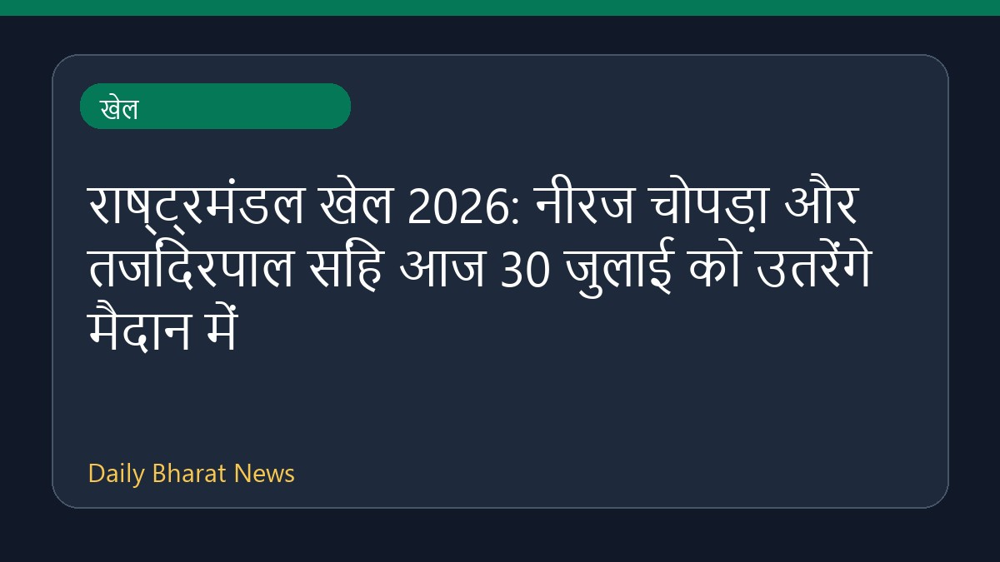

राष्ट्रमंडल खेल 2026: नीरज चोपड़ा और तजिंदरपाल सिंह आज 30 जुलाई को उतरेंगे मैदान में

30 जुलाई को राष्ट्रमंडल खेल 2026 के आठवें दिन भारत का मुकाबला महत्वपूर्ण रहने वाला है। भाला फेंक एथलीट नीरज चोपड़ा अपने दूसरे स्वर्ण पदक के अभियान की शुरुआत करने जा रहे हैं। इसके साथ ही गोला फेंक खिलाड़ी तजिंदरपाल सिंह तूर भी पदक जीतने के इरादे से मैदान में उतरेंगे। ग्लासगो में आयोजित हो रहे इन खेलों में नीरज चोपड़ा अपना खिताब वापस हासिल करने का प्रयास करेंगे, हालांकि इस बार भाला फेंक की स्पर्धा में प्रतिस्पर्धी खिलाड़ी बदले हुए हैं। भारत की नजरें आज के शेड्यूल में और पदक हासिल करने पर टिकी हैं।
संपादकीय संदर्भ
पाठकों को इस रिपोर्ट की पुष्टि मूल स्रोत से अवश्य करनी चाहिए क्योंकि खेल प्रतियोगिताओं और एथलीटों के प्रदर्शन से जुड़ी खबरें समय के साथ बदल सकती हैं। किसी भी अंतिम निष्कर्ष पर पहुँचने से पहले आधिकारिक ओलंपिक और खेल अपडेट्स की जांच करना हमेशा सुरक्षित रहता है।